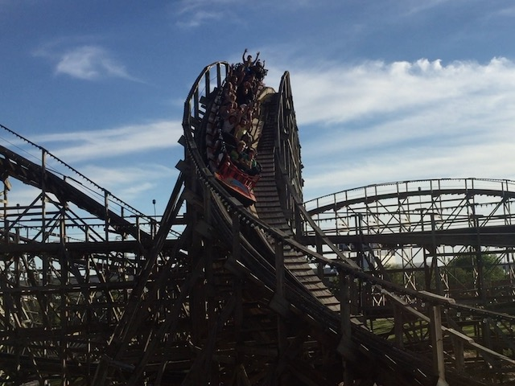
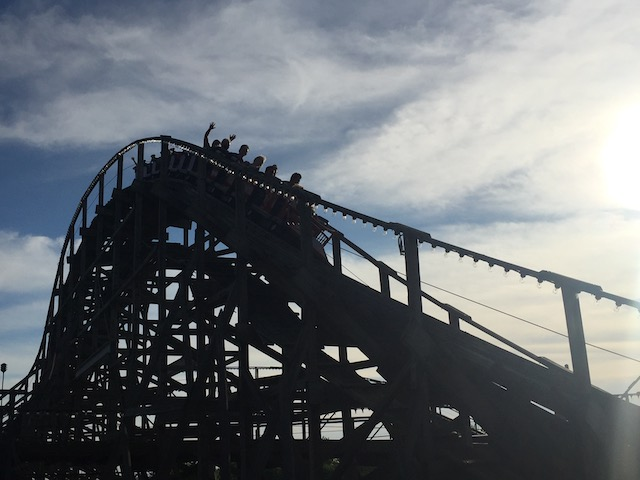

| |

Wildcat Review

For today's review, we're gonna have to travel back in time to 2021 when Wildcat was still at Hersheypark. Fun fact about this ride. This was the first GCI ever built. So in a sense, this was a historical coaster. I know a lot of people hated this ride and found it to be rough as hell since....it was essentially a prototype. GCIs got WAY better than Wildcat. Even at Hersheypark, they have Lightning Racer, which was unquestionably better (and is still running at the park). Now granted, the RMC conversion is almost certainly worth the trade (I haven't ridden Wildcat's Revenge yet. But I have yet to see an RMC Conversion that produced a worse ride than what they converted). But yeah. You pulled down the orange lap bar and away we went. We went through a turn that included a small incline. We then went through a teeny tinny little bump before the lifthill. Then at the top of the lifthill, we got a good view of the Boardwalk if we looked to our right. We then twisted down the first drop. We gained quite a bit of speed from the first drop. We then rose up into a hill before we slammed into a left turn with a dip in the middle. This provided us with a good sense of laterals. We then went into some random left curved drop. While the drop wasn't quite as crazy as we assumeed it would be, it did provide us with some laterals and even more speed. We then rose up into some curved hill, which gave us more laterals. We then headed down into a small drop before we rose up into a big banked turnaround. The turnaround gave us some more laterals until we headed down into a twisted drop to the left. We then headed straight into a big banked turn. We were still maintaining good speed throughout the ride. We then dipped down and then rose up into a twisted hill to the left before we dropped back down to the left. We then rose up through a slight incline before we went through another big turnaround. We were still going fast and had some nice laterals at this point of the ride. We then went through a couple dips and into the brake run. Now while it was nowhere near my favorite wooden coaster, it still was a fun coaster and a good start to GCI. I know that in the past, people have bitched about the ride hurting. Again, I'm sure Wildcat's Revenge curbstomps it as I even the worst RMCs are still really fun, and this genuinely does look like one of the better ones. So go check out Wildcat's Revenge. But regardless, this ride launched all the other RMCs. So thanks for paving the way Wildcat. You had a good life and were a fun ride. Rest in peace.
7/10
Location: Hersheypark
Opened: 1996
Died: July 31, 2022
Built by: Great Coasters International
Last Ridden: June 25, 2021
Wildcat Photos





Home
|